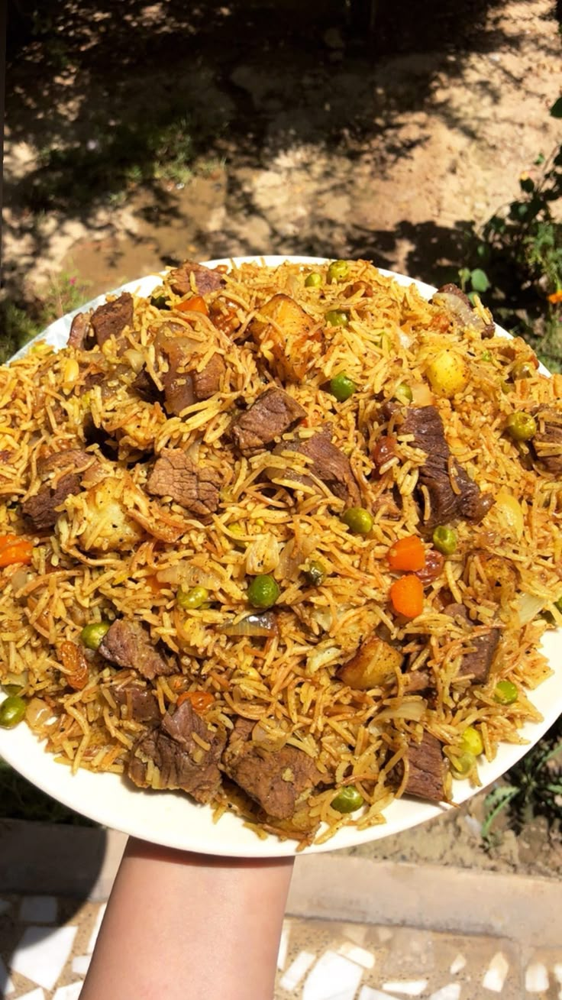

Pilau
Home

Pilau is a cherished dish from the Kenyan coast, celebrated for its rich flavors and aromatic spices.
It is a cornerstone of Swahili cuisine, often prepared during special occasions such as weddings,
family gatherings, and festivals. Made with fragrant basmati rice, a blend of spices like
cardamom, cloves, and cinnamon, and tender meat (usually beef or goat), Pilau embodies the vibrant
and diverse culinary traditions of the Kenyan coast.
Ingredients
- 2 cups of basmati rice
- 500g of beef, goat, or chicken (cubed)
- 2 large onions (sliced)
- 3 cloves of garlic (minced)
- 1 tablespoon of ginger (grated)
- 2 tomatoes (chopped)
- 2 tablespoons of cooking oil
- 1 teaspoon of ground cardamom
- 1 teaspoon of ground cloves
- 1 teaspoon of ground cinnamon
- 1 teaspoon of ground cumin
- 1 teaspoon of black pepper
- Salt to taste
- 4 cups of water or broth
Steps for Preparation
- Start by preparing the meat: wash it thoroughly, cut it into cubes, and boil it with a pinch of salt until tender. Set it aside along with the broth.
- Heat the cooking oil in a large pot over medium heat.
- Add the sliced onions and cook until golden brown.
- Stir in the minced garlic and grated ginger, cooking for 1-2 minutes until fragrant.
- Add the boiled meat and cook for a few minutes to allow it to absorb the flavors.
- Mix in the chopped tomatoes and cook until they soften and form a thick sauce.
- Stir in the spices (cardamom, cloves, cinnamon, cumin, black pepper) and cook for another minute.
- Add the basmati rice and stir to coat it evenly with the spice mixture.
- Pour in the water or broth, add salt to taste, and bring to a boil.
- Reduce the heat to low, cover the pot, and let the rice simmer for 20-25 minutes or until fully cooked.
- Once the rice is cooked, fluff it gently with a fork and let it rest for a few minutes before serving.